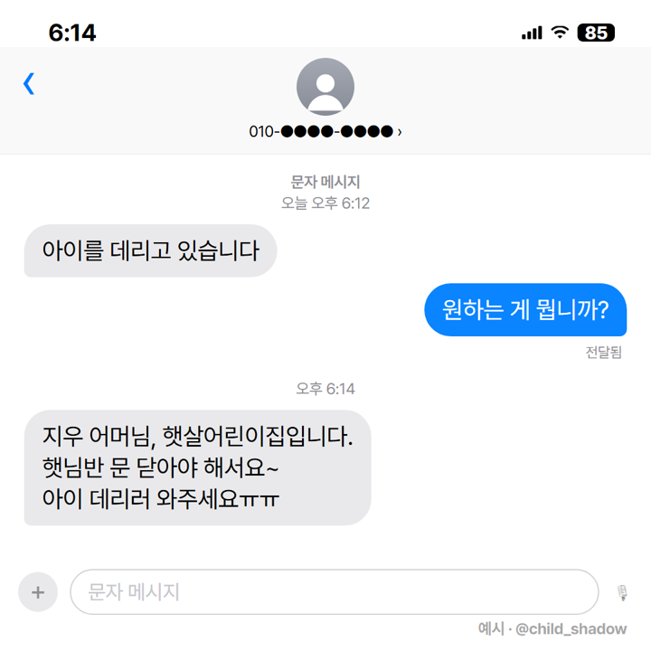
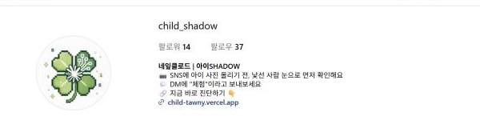

① 경각심
사용자 유입 · 인스타 @child_shadow
 ② 직접 찾기
② 직접 찾기
 ③ 30초 사용법
위험을 먼저 보여 주고, 직접 찾아보게 한 뒤, 사용법을 알려 줍니다
③ 30초 사용법
위험을 먼저 보여 주고, 직접 찾아보게 한 뒤, 사용법을 알려 줍니다

② 직접 찾기③ 30초 사용법11월에 시작한 계정 · 게시물 8
다음 계획
1. 위치 모델을 앱에 붙임
우리 서버에서 실행 · 사진을 외부로 보내지 않음
2. 시험 사진 102장으로 다시 잼
학습에 쓰지 않고 고정해 둔 사진
3. 놓친 단서를 사용자가 직접 추가
지금은 잘못 잡은 것을 빼기만 할 수 있음
4. 앱이 꺼지는 문제 고치기
체험자 3명이 겪음 (보정 중 종료 포함)